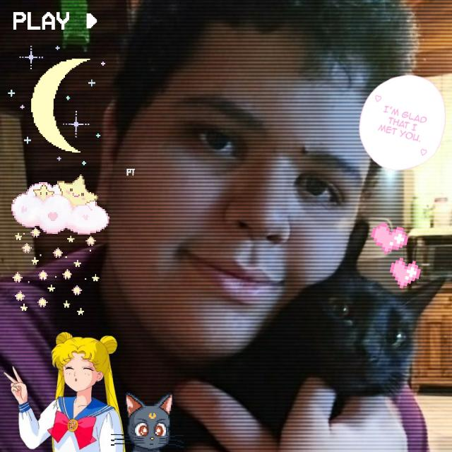
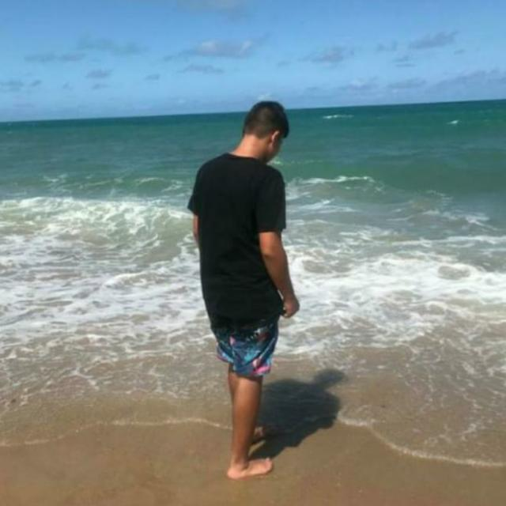

Sobre Nós
João Alberto
Oi meu nome é João Alberto, e sou um estudante de 16 anos, que atualmente está fazendo o 2º Ano do Médio, e o 3º Semestre do Curso Técnico de Informática, sou uma pessoa bem tranquila e de boa, mas um pouco distraído, curto muito ciências exatas e coisas relacionadas a tecnologia, e também gosto bastante da arte e suas expressões, esse sou eu. :)

Herick
Olá, me chamo Herick Basso. Tenho 16 anos faço o 2º ano do ensino medio na Ulbra-São Lucas, e a tarde faço curso tecnico em informatica. Gosto muito de anime, de jogar :)
